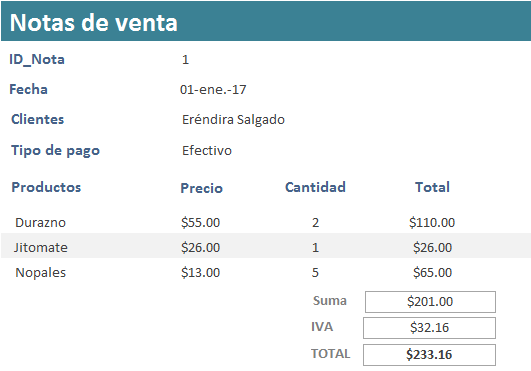
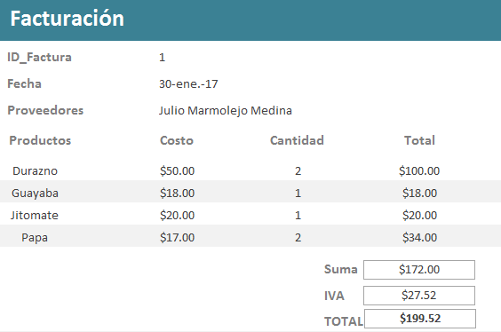
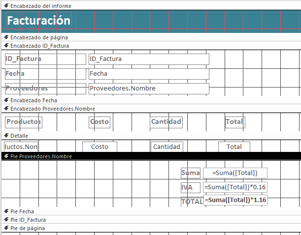
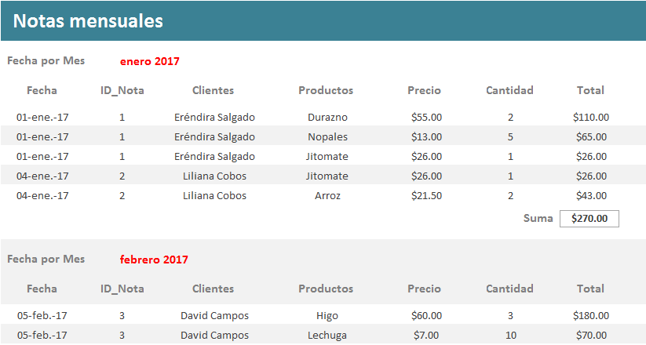

.
1. Consulta de
notas de venta (Consulta con campos calculados)
- La frutería y verdulería "La Huerta" necesita generar un informe de
cada nota de venta de sus clientes, por lo que se te pide crees una
consulta donde se despliegue la siguiente información.
NOTA: El campo Total se crea en la consulta no se
encuentra en ninguna tabla..

2. Informe de notas de venta
(Informe agrupado por nota de venta)
- Utiliza la consulta
de notas para generar un informe como se muestra en la imagen.

- Debes agrupar la información por ID_Nota, Fecha, Nombre del
cliente y Tipo de pago. En el botón de Opciones de
agrupamiento: selecciona Normal en Intervalos
de agrupamiento para todos los campos.
- Ordena la información en forma ascendentemente por Nombre del
producto. En el botón de Opciones de resumen: el informe
deberá realizar la suma del campo Total por cada factura
del cliente.
- Distribución:
Esquema y Orientación: Vertical
- El título del informe deberá ser: Notas de venta.
- Del menú, da clic en el botón de Cerrar vista previa de impresión,
para que muestre el informe en Vista diseño.

- En la sección de Encabezado ID_Nota, cambia el nombre
de las etiquetas para que se vean como se muestra en la imagen.
- En la sección de Pie Tipo de pago elimina la caja de
texto "="Resumir
por " & "'Tipo de pago' = " & " " & [Tipo de pago] & " (" & Cuenta(*) &
" " & SiInm(Cuenta(*)=1,"registro de detalle","registros de detalle") &
")"
- En la sección de Pie Clientes.Nombre elimina la caja de
texto="Resumir por " &
"'Clientes.Nombre' = " & " " & [Clientes.Nombre] & " (" &
Cuenta(*) & " " & SiInm(Cuenta(*)=1,"registro de
detalle","registros de detalle") & ")".
Elimina también la etiqueta y el cuadro de texto de Suma.
- En la sección de Pie Fecha elimina la caja de texto
="Resumir por " & "'Fecha' = " & " " & [Fecha] & " (" &
Cuenta(*) & " " & SiInm(Cuenta(*)=1,"registro de
detalle","registros de detalle") & ")"
- En la sección de Pie ID_Nota elimina la caja de texto
="Resumir por " & "'ID_Nota' = " & " " & [ID_Nota] & " (" &
Cuenta(*) & " " & SiInm(Cuenta(*)=1,"registro de
detalle","registros de detalle") & ")" .
Elimina también la etiqueta y el cuadro de texto de Suma.
- En la sección de Pie Tipo de pago inserta:
- Un cuadro de texto con el título
IVA y escribe la fórmula para calcular el IVA del la suma del Total de
la factura ( =Suma([Total]) * 0.16
).
- Un cuadro de texto con el título TOTAL
y escribe la fórmula para calcular el Total a pagar de la factura (
=Suma([Total]) * 1.16 ).
- Ajusta el tamaño y distribución de todos los controles (cuadros de
texto y etiquetas), de tal forma que se vean como se presenta en la
imagen.
- Alinea el contenido
de los cuadros de texto y etiquetas de la mejor forma (izquierda /
centrado
/ derecha)

- Cambia el diseño de tu
informe. Puedes cambiar también el color y el tipo de letra
que más te agrade.
- Checa tu informe,
dando clic en Ver > Vista Informes.
3.
Consulta de Facturas (Consulta con campos calculados)
- La frutería y verdulería "La Huerta" necesita generar un informe de
cada factura de compra a sus proveedores, por lo que se te pide
crees una consulta donde se despliegue la siguiente información.
NOTA: El campo Total se crea en la consulta no se
encuentra en ninguna tabla..

4. Informe de Facturas
(Informe agrupado por factura)
- Utiliza la
consulta de facturas para generar un informe como se muestra en
la imagen.

- Debes agrupar la información por ID_Factura, Fecha y Nombre del
proveedor. En el botón de Opciones de agrupamiento:
selecciona Normal en Intervalos de
agrupamiento
para todos los campos.
- Ordena la información en forma ascendentemente por Nombre del
producto. En el botón de Opciones de resumen: el
informe deberá realizar la suma del campo Total por
cada factura del cliente.
- Distribución:
Esquema y Orientación: Vertical
- El título del informe deberá ser: Facturación.
- Del menú, da clic en el botón de Cerrar vista previa de impresión,
para que muestre el informe en Vista diseño.
- En la sección de Encabezado ID_Factura, cambia el
nombre de las etiquetas para que se vean como se muestra en la imagen.
- En la sección de Pie Proveedores.Nombre elimina la caja
de texto="Resumir por " &
"'Proveedores.Nombre' = " & " " & [Proveedores.Nombre] & " (" &
Cuenta(*) & " " & SiInm(Cuenta(*)=1,"registro de
detalle","registros de detalle") & ")".
- En la sección de Pie Fecha elimina la caja de texto
="Resumir por " & "'Fecha' = " & " " & [Fecha] & " (" &
Cuenta(*) & " " & SiInm(Cuenta(*)=1,"registro de
detalle","registros de detalle") & ")"
Elimina también la etiqueta y el cuadro de texto de Suma.
- En la sección de Pie ID_Factura elimina la caja de texto
="Resumir por " & "'ID_Factura' = " & " " & [ID_Factura] & " (" &
Cuenta(*) & " " & SiInm(Cuenta(*)=1,"registro de
detalle","registros de detalle") & ")" .
Elimina también la etiqueta y el cuadro de texto de Suma.
- En la sección de Pie Proveedores.Nombre, inserta:
- Un cuadro de texto con el título
IVA y escribe la fórmula para calcular el IVA del la suma del
Total de la factura (
=Suma([Total]) * 0.16 ).
- Un cuadro de texto con el título TOTAL
y escribe la fórmula para calcular el Total a pagar de la
factura ( =Suma([Total]) *
1.16 ).
- Ajusta el tamaño y distribución de todos los controles (cuadros de
texto y etiquetas), de tal forma que se vean como se presenta en
la imagen.
- Alinea el
contenido de los cuadros de texto y etiquetas de la mejor forma
(izquierda / centrado / derecha)

- Cambia el
diseño de tu informe. Puedes cambiar también el color
y el tipo de letra que más te agrade.
- Checa tu
informe, dando clic en Ver > Vista Informes.
5.
Consulta de Notas mensuales (Consulta con campos calculados)
- La frutería y verdulería "La Huerta" necesita conocer las
Notas de venta que tiene mensualmente, por lo que se te pide
crear una consulta donde se despliegue la información que se muestra en
la imagen.
- Crea un campo
calculado titulado Total donde realices la multiplicación de los
campos Precio por Cantidad.
- Guarda la consulta
como Notas mensuales
- Checa los datos
resultados de tu consulta, dando clic en Ver > Vista Hoja de datos..

|